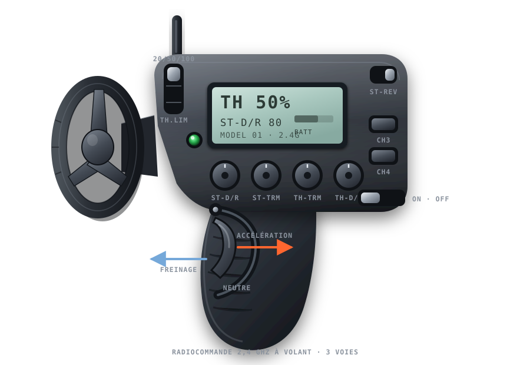
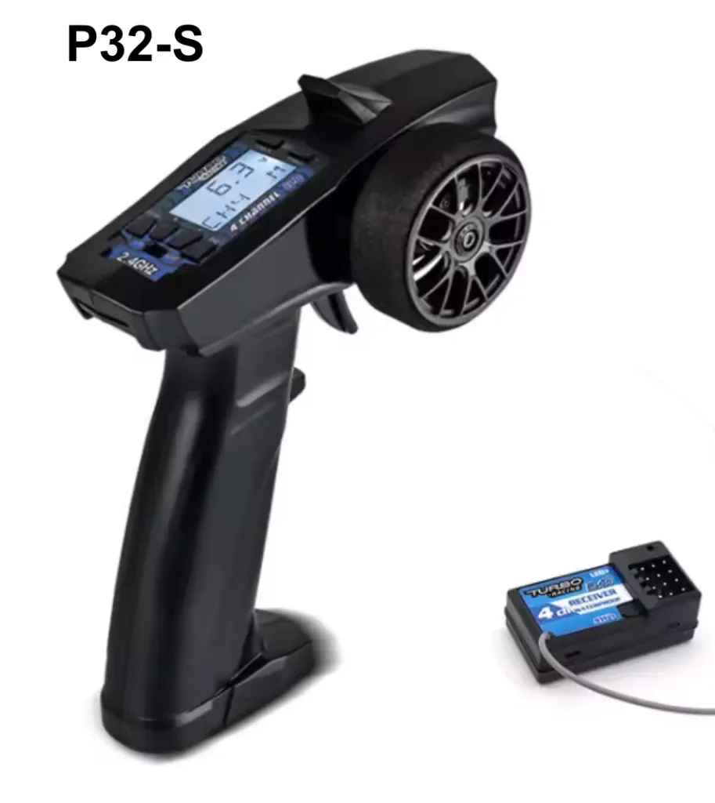
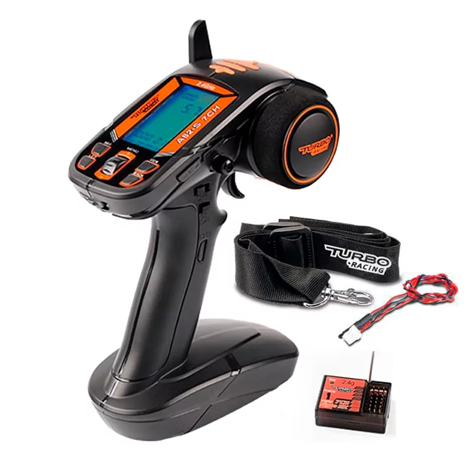

TH.LIM 20 %
Direction et puissance réduites, le temps d’apprendre les commandes et de finir un tour sans toucher les bordures.
Matériel · outil 03
La radio des 1/76 est astucieusement séparable en deux pour prendre moins de place dans le sac. Clique un réglage sur le schéma : ce qu’il fait, quand y toucher, et quand surtout ne pas y toucher.
Les trois commandes qui comptent vraiment : ST.TRIM pour que la voiture roule droit, TH.TRIM pour qu’elle ne bouge pas à l’arrêt, et TH.LIM pour choisir la puissance (20 %, 50 % ou 100 %). Le reste s’ajuste rarement — et le bouton REV ne se touche jamais.

Réglage de départ
Direction et puissance réduites, le temps d’apprendre les commandes et de finir un tour sans toucher les bordures.
Direction moyenne, puissance progressive, tours réguliers. Le meilleur réglage pour rouler à plusieurs sans carambolage.
Pleine puissance, si elle est maîtrisée. À ce niveau, le frein compte plus que l’accélérateur.
Appuie sur les deux petits contacteurs sous le véhicule avec le gros trombone livré dans la boîte. Éteins puis rallume la radio : la connexion revient. Un témoin fixe signifie que la liaison est établie, un témoin clignotant qu’elle cherche encore.
La radio d’origine peut être remplacée par un modèle plus évolué. La P32S ajoute l’exponentiel de direction et la gestion multi-modèles. L’A82 propose la même chose dans un boîtier plus grand, avec un meilleur écran. Utile dès que tu pilotes plusieurs voitures.


Ces réglages ne servent à rien sans le geste. La suite :
Les 4 gestes qui comptent